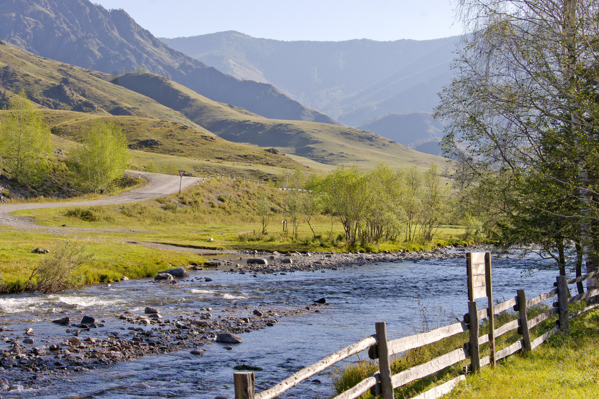
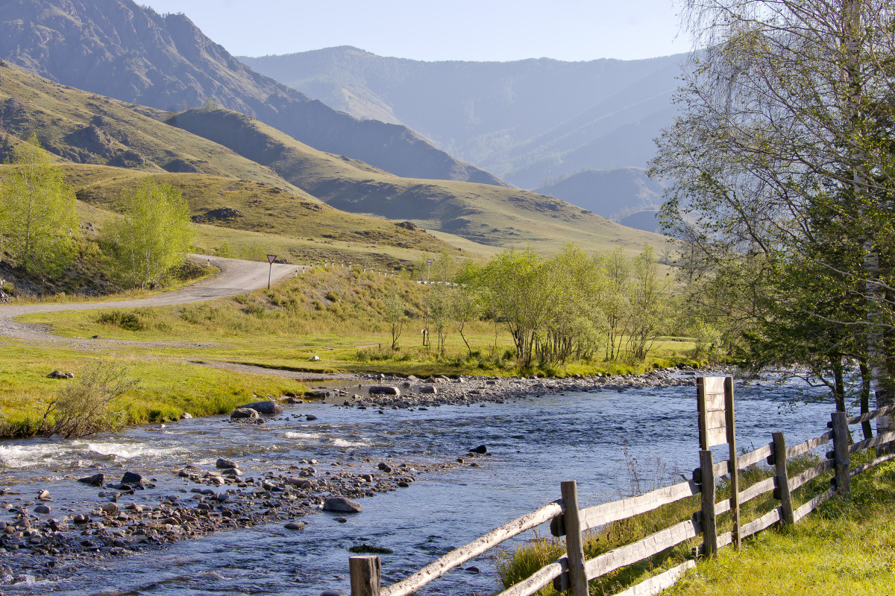

Provincia de Yukón
Yellowstone es el primer parque nacional del mundo, ubicado principalmente en Wyoming, y es famoso por estar sobre un supervolcán que alimenta géiseres, fuentes termales y paisajes geotérmicos únicos como Old Faithful y las coloridas piscinas minerales; combina praderas, bosques, cañones y lagos de alta montaña con una fauna impresionante.
Parque Nacional Kluane
18 / 08 / 2025Río Yukon
19 / 08 / 2025Montaña Logan
18 / 08 / 2025
Patagonia
La Patagonia, en el sur de Argentina y Chile, es una región vasta y poco poblada, conocida por sus paisajes extremos: montañas como el Fitz Roy, grandes glaciares, lagos y estepas azotadas por el viento. Tiene un clima frío y cambiante, una fauna diversa y una identidad cultural marcada por pueblos originarios y la vida austera, lo que la convierte en un lugar de naturaleza imponente y sensación de fin del mundo.
Glaciar Perito Moreno
16 / 09 / 2025Glaciar Grey
22 / 08 / 2025Estepa patagónica
23 / 08 / 2025
Parque Yellowstone
Yellowstone es el primer parque nacional del mundo, ubicado principalmente en Wyoming, y es famoso por estar sobre un supervolcán que alimenta géiseres, fuentes termales y paisajes geotérmicos únicos como Old Faithful y las coloridas piscinas minerales; combina praderas, bosques, cañones y lagos de alta montaña con una fauna impresionante.
Old Faithful
02 / 09 / 2025Yellowstone Lake
14 / 08 / 2025Cascada Lower Falls
15 / 08 / 2025
Siberia
Siberia ocupa casi todo el norte de Rusia, desde los montes Urales hasta el océano Pacífico. Es más grande que Canadá, pero con una densidad de población bajísima. Aun así, allí viven millones de personas, sobre todo en ciudades del sur.
Lago Baikal
21 / 08 / 2025Montes Altái
23 / 08 / 2025 
